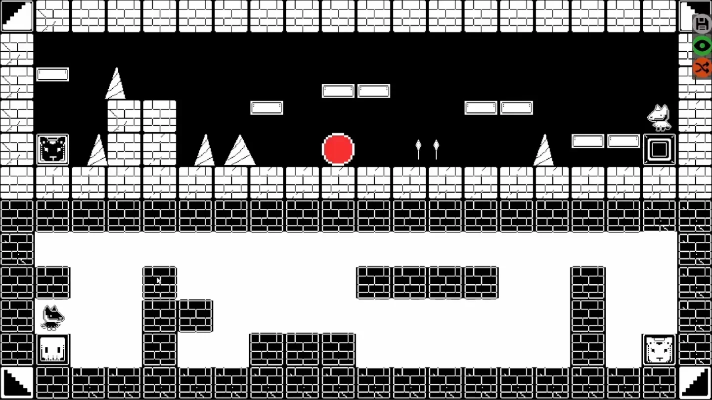
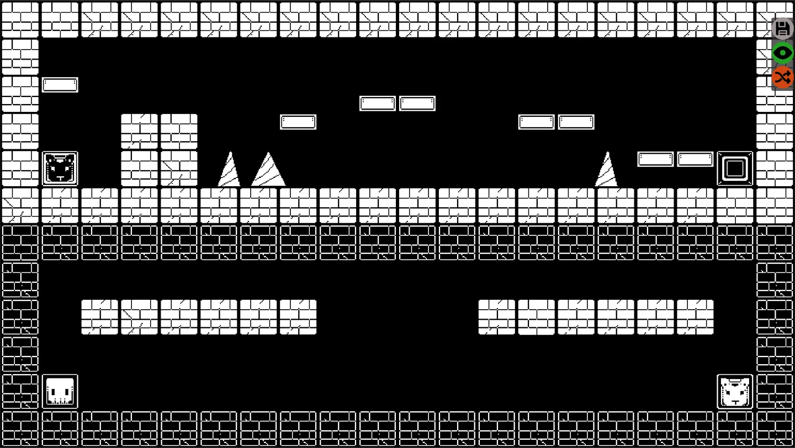
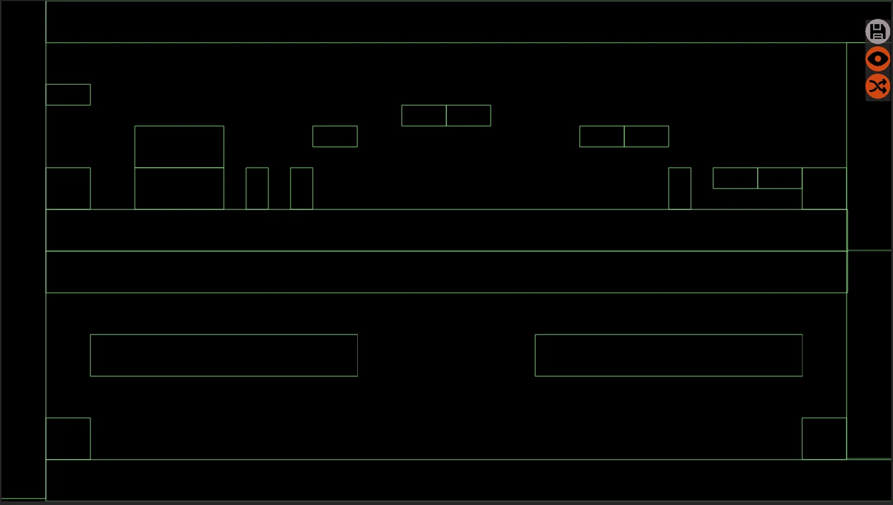

Descripción
Juego 2D realizado por una equipo de 4 personas durante un game jam. En el juego tomas el papel de dos xoloitzcuitles en su camino al Mictlán. Deberás de encontrar la salida en cada uno de los acertijos que ambos continúen con su viaje.
Después del tiempo límite se terminarón los movimientos y se generó una herramienta para que la persona ecargada del diseño pudiera hacer diferentes escenarios libremente.
Contribución
Programación del movimiento y habilidades de los personajes, recoger monedas, hacer daño, y el desarrollo de la herramienta.
Funcionalidades de la herramienta
- Clasificación de sprites por catergoría.
- Colocar sprites del mismo tipo de manera aleatoria.
- Reducción de cajas de colisión al combinarse con otras de la misma categoría.
- Guardado en scriptable objects.
- Pausar físicas y reubicar personajes para probar el nivel mientras se crea.
- Dibujar líneas y rellenas áreas.
Imágenes del proyecto
Selecciona una captura para verla en su resolución original.





